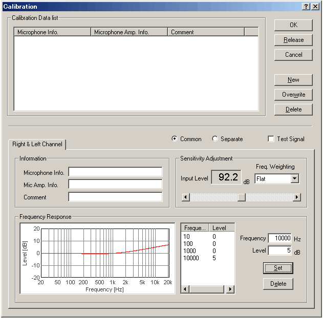
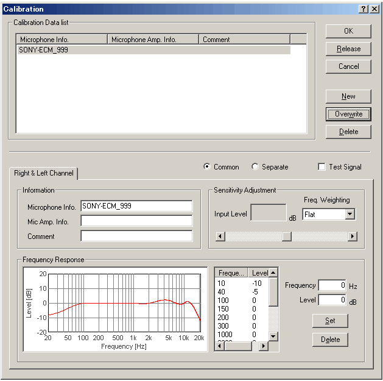

DSSF3 > RA > Operation Guide > Microphone setting
| 1) | Open the FFT analyzer and click the Calibration button. | ||||||||||||||||||||
| 2) | Calibration window opens. Click the Edit button. | ||||||||||||||||||||
| 3) | Edit window opens. Frequency Response curve on this window can be edited by entering the frequency and its level. For practice, select 10000 Hz from the list, enter 5 (dB) in the Level box, and click the Set button. Then the frequency curve changes as in the figure below. Only four frequencies of 10, 100, 1000, and 10000 are appeared in the list, but you can add the new frequencies by entering the frequency and its level in the boxes and clicking the Set button.  |
||||||||||||||||||||
| 4) | Edit the frequency response curve to match those of the microphone.  In this example, the following frequencies were edited to make a frequency response curve (0deg.) below.
|
||||||||||||||||||||
| 5) | Enter the Microphone Info., Mic Amp. Info. (optional) and Comment (optional), and click the New button. It appears on the calibration data list. To use the stored calibration data, just select the microphone data from the list. |
DSSF3 > RA > Operation Guide > Microphone setting